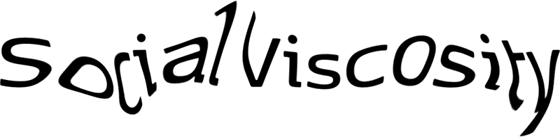

 Design for social viscosity lab | University of Illinois at Urbana-Champaign
Scope 1
Change threshold 8
Show agents
Show trajectories
Show interactions
Show perception field
Show interaction matrix
I Want Hue , chroma.js , P5.js, Color converter, Color vision theory, Color in Information display graphics
Observers in the world: 0 | Humans: 0 | Nonhumans: 0
Interaction matrix
Juan Salamanca 2019 | Made with P5.js